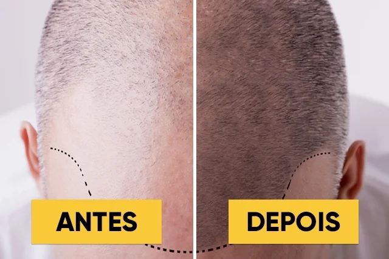

CLÍNICA DE ESTÉTICA DERMO FUNCIONALE

- Página inicial
- Agendar
O que é implante capilar?
O implante capilar é uma cirurgia minimamente invasiva que visa a implantação de folículos pilosos (estruturas localizadas na pele e de onde nascem os cabelos ou pelos) nas áreas onde não existe cabelo ou onde existe uma menor densidade (vertex do couro cabeludo). Estes folículos são retirados das áreas onde existe cabelo, habitualmente da região da nuca e das partes laterais do couro cabeludo. Um transplante capilar é efetivamente uma cirurgia que permite transplantar o cabelo de uma área sem predisposição para calvície ou queda de cabelo, para a região afetada pela falta de cabelo.
Para que serve o implante capilar?
No implante de cabelo, fios naturais do paciente são retirados da área doadora, para serem aplicados nas áreas calvas e geralmente os pacientes já testatarm vários tratamentos para queda que não obtiveram eficácia. Geralmente, as áreas de doação estão localizadas próximos a nuca e regiões laterais da cabeça. O objetivo do Implante Capilar é que os fios transplantados gerem novos folículos capilares saudáveis, o que auxilia no retorno do crescimento do cabelo.
Para quem é indicado?
O implante capilar não é recomendado para todos os casos de calvície, já que existem condições médicas que podem ser tratadas com medicamentos. Na maioria das vezes, o procedimento é indicado para homens entre 30 e 40 anos de idade, que apresentam calvície avançada.
Quais as contraidicações?
Como referido anteriormente, nem todos os candidatos são elegíveis para um implante capilar devido à existência de patologias associadas que possam interferir com os resultados do procedimento, a saber: Mulheres com padrão generalizado de queda de cabelo, isto é, perda em todo o couro cabeludo; Alopecia areata grave (peladas do couro cabeludo); Indivíduos com poucas zonas de cabelo “doador”; Pessoas com grandes cicatrizes no couro cabeludo; Doentes cuja perda de cabelo é provocada por alguma medicação ou outro tipo de tratamento (ex.: quimioterapia); Entre outros. Os doentes que padecem de algumas doenças crónicas como a diabetes, hipertensão, etc. podem ser submetidos ao procedimento. Contudo, deve existir sempre uma avaliação médica prévia.
Quais resultados esperar?
Em geral, espera-se ver um crescimento capilar significativo entre 4 e 6 meses após o procedimento, mas todo o processo de crescimento capilar pode levar até um ano.
Qual o profissional que pode realizar?
O procedimento de implante capilar é uma intervenção cirúrgica, ato privativo do médico, cuja realização é facultada a todo médico regularmente inscrito no CRM do estado em que atua. Aqui na clínica temos o doutor Minouro que pode realizar esse procedimento e também a doutora Carolina.
Gostou de conhecer sobre o implante capilar e se interessou por ele, então, agende sua consulta com algum de nossos profissionais.